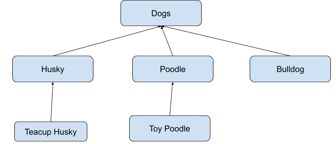

| OOP: OBJECT ORIENTED PROGRAMMING |
PRIOR KNOWLEDGE
The first part of this tutorial will mainly focus on theories, and explanations behind OOP. If you feel yourself becoming bored out of your mind, and wish to see practical code examples, look out for blue boxes with a different font.
Also, before you get started: I highly recommend you check out this Google Slides tutorial I made on Variables in Java. If you are unfamiliar with terms such as , , , , , , etc. please read this tutorial on variables first as I will be using those terms a lot. Enjoy reading. :)
THE BASICS
Many famous programming languages, such as Java, JavaScript and C++, are considered object-oriented languages. But, what exactly IS object-oriented programming (OOP), and how does it work?
OOP is a programming model meant to replicate real-life through objects. By thinking of everything as an object and modelling languages as such, it makes it easier for programmers to understand how to manipulate and structure their code.
The base of OOP stems from its concept of objects. Objects are named instances of a class. Classes are like the blueprint for objects; they define what attributes an instance of this class type will have. We also require computer memory, since we need somewhere to store this class and its objects.
A famous analogy for objects is often used with cookie dough. The dough is like a computer's memory, a cookie cutter is like a class, and the cookies we create with this cutter are like our objects! With that said, this also means we can create multiple instances of a class (you never have only 1 cookie, do you?)
Moving on, we briefly touched upon attributes of an object in a previous paragraph. This refers to its properties which may vary upon each instantiation of a class. For example, when we create a cookie, we can decide its flavour! Every object also has a behaviour, or what an object can do and what can be done to it. For instance, the ability to eat the cookie is a behaviour. With Java, we start referring to these behaviours as methods and attributes as variables.
When working with classes, variables and methods, you'll come across the term static. In Java, static characteristics of a class are not shared by instances of said class. This means that there is never going to be a duplicate of something declared as static. As I often tell my brother, "There can only be one." The static keyword can be applied to methods, variables, or even classes! When you apply static to classes, this means you cannot create instances of this class. With non-static values, every instance of that class will inherit that method, and can treat it like its own. This is why non-static variables/methods require an object to run.
So we've done a quick crash-course on classes, variables and methods, but how do we use any of this stuff in Java? A class constructor would be the place to start. All classes have a constructor, and this is what is used to create an instance of a class. All instance variables are usually assigned a value here. Even if a constructor is not explicitly made, Java will automatically create a default constructor for you (but this will result in your object instances being null, or empty). Remember; you MUST create an object BEFORE you can use any of its instance methods or attributes.
Constructors are located inside a class and have the same identifier (name) as its class. The keyword new is used along with the constructor to create an object. Usually, classes have many constructors, all with the same name but they take in different information (known as parameters), which define the attributes of each object. If there are multiple constructors with different parameters, these are known as overloaded constructors. On that note, it's also possible to have overloaded methods, or methods with the same name but different parameters! You normally only use overloaded methods/constructors when they have similar purposes but require different information/return different values.
Now that we theoretically know how an object is created, we can move on to how we use its methods and variables (also known as members of that object!). To do this, we use dot notation. Each class is given a name when they're constructed. For example, if I had a class called and I created an instance of the class, I could name it . To access non-static methods, we would write something like or ! With static classes, we would instead need to call the original class's name along with the method/variable we wish to access in dot notation.
ACCESS MODIFIERS
In most intermediate programs, you'll likely be working with many different classes, and thus, many different objects. But, we don't always want them to be able to see what every other class is doing. With larger scale programs, allowing outside classes to see everything about a class becomes dangerous as it allows other classes to easily manipulate another class's variables and methods. Thus, we need access modifiers!
There are 2 main access modifiers we will focus on in this tutorial; and . Adding before you declare a variable or method means that said variable or method can only be used inside the class. Adding before you declare/create a variable or method means that said variable or method can be used inside or outside the class.
Instance variables, or variables that can only be used upon instantiation of a class, should usually be declared . This is because we want to protect the variables from being accessed directly, so they can't be modified or used inappropriately. This is considered encapsulation. Methods generally depend; if you want other classes to use the method, then you declare it as ; otherwise, it should be declared as .
ENOUGH WORDS, LET'S CODE!
I'll be honest, reading the words for code is a lot less interesting than actually coding. So let's take a look at some snippets of code and break it down!
public class Dog{
}
What's going on here? Well, we're creating a class! I set the accessor to public, as I want other classes to be able to see this Dog class. I set the data type to class, since this is a class, and added the identifier after.
public class Dog{
public Dog(){
}
public Dog(String name){
}
}
Can you guess what was added? If you guessed constructors, you're right! I've created a default constructor with no values, and another overloaded constructor that takes in a String. Now, we've successfully created a class called Dog with 2 overloaded constructors.
public class Dog{
private String name;
public Dog(){
name = "";
}
public Dog(String name){
this.name = name;
}
}
Wow, what happened there? Well, I created an instance variable called to hold the Dog's name. In the default constructor (no parameters), I set equal to a String of length 0. In the overloaded constructor, I set equal to whatever value is passed into the constructor. Notice the keyword . It refers to its calling object. I used the keyword to differentiate between the variable being passed in called , and instance variable called . Note that the keyword is not required for the program to work, and is simply a way to increase code readability.
public class Dog{
private String name;
public Dog(){
name = "";
}
public Dog(String name){
this.name = name;
}
public void bark(){
System.out.println("woof!");
}
}
I've added a new method called bark, which will print out each time it's called!
INHERITANCE
One of the primary pros of an object-oriented language is that we are able to extend our classes. In other words, we can have classes inherit the methods and variables from another class! Think of it like a family; the parents can create kids who inherit their genes (and possibly money, though that's not the focus here 😉). Why is this useful? Well, it allows us to essentially reuse code since we're inheriting all of their methods! Let's say we wanted to extend our Dog class to create a Husky.
public class Husky extends Dog{
public Husky(){
super();
}
public void bark(){
System.out.println("WOOOOOF");
}
}
What just happened? Well, by writing onto , we've essentially created a Husky class that inherits all the variables and methods from Dog! When using inheritance, the class you are inheriting properties from is called the superclass (parent class), and the class that is doing the inheriting is called the subclass (or the client of the parent class). Note that a subclass can only inherit one superclass at a time. This creates an is-a(n) relationship between our classes! In our example, Husky would be the subclass and Dog would be the superclass, meaning the Husky is-a Dog.
So why are we writing in Husky's constructor? Well, we're writing super because we want to use the superclass's constructor. If using the superclass's constructor, it MUST be the first line in the subclass's constructor.
What about the method? Why is there a new one? Well, I'm simply overriding the parent's method! I'm using the same method name, but redefining the contents of the method. With overridden methods, how will Java know which one to call? Well, when you use an object to invoke a method, the object finds the most recent class starting from the class of your object's data type that implements the method and uses that one!
Also, remember how we said that subclasses inherit all the variables and methods from its superclass? This is true, but it doesn't strictly mean that they can access everything. We can access the method , since it's public! Note that since we tried to override in our subclass, if we wanted to use the super class's method we'd need to write . But since we used private on our superclass's instance variables, this means that we can't access them directly. Thus, let me introduce get and set methods!
GETTERS & SETTERS
Get and set methods are mainly used to return or change the value of an instance variable.
Get methods (also known as accessor methods, or getters) are usually written in the form . This essentially creates a method whose purpose is to return the value of a variable. Return statements ( in this case) essentially return a value and quits the method. For example, if I wrote and returns , then my println statement would output . Remember, should always be the same data type as the variable you are returning!
Set methods (also known as mutator methods, or setters) are usually written in the form . This essentially creates a method whose purpose is to set the value of a variable. Remember, should always be the same data type as the variable you are changing!
CLASS HIERARCHIES
So we know inheritance creates an is-a relationship between subclasses and superclasses. But to what extent can we take this? Consider the diagram below.

The arrows depict an is-a relationship between the classes. For example, Husky is-a dog. Teacup Husky is-a Husky. But, did you know that Teacup Husky is, by extension, also a dog? This means that Teacup Husky also inherits the variables and methods from Dog, and in case, this is done through Husky. Why is this important? Well, doing this helps to eliminate repetition of code among the classes. For example, instead of creating multiple eyes, legs, bodies and fur variables in husky, poodle and bulldog, we can put them all into dogs so that its subclasses will inherit all the information.
On the topic of hierarchies, let's also dive into abstract classes! Abstract classes usually contain one or more abstract methods (in method signatures (declaration line), they're written something like ). Abstract classes are used as common superclasses for more specific classes. Normally, they're closer to the top of the hierarchy. Note that you cannot instantiate an abstract class; if you want to use it, you need to inherit the class. A class with no abstract methods is called concrete.
POLYMORPHISM
Polymorphism essentially refers to an object's ability to take on different "forms" via inheritance. If multiple classes in your is-a relationship chain have overridden methods, this is essentially how Java knows which one to use at which time based on the Object's data type. Consider the following code:
public class Bird{
public void chirp(){
System.out.println("weeeee");
}
}
public class Robin extends Bird{
public void chirp(){
System.out.println("chirpity chirp chirp");
}
}
public class BlueJay extends Bird{
public void chirp(){
System.out.println("I like seeds");
}
}
public class Test{
public static void main (String [] args){
Bird birb = new Bird();
Bird robin = new Robin();
Bird blueJay = new BlueJay();
birb.chirp();
robin.chirp();
blueJay.chirp();
}
}
Which will output in console:
weeeee
chirpity chirp chirp
I like seeds
Polymorphism can give a superclass the ability to refer to its subclass's methods. There's no need to do anything special for polymorphism to occur. As long as there's a common superclass among some subclasses, there's polymorphism.
UPCASTING & DOWNCASTING
Before we begin, I'd like to make clear that upcasting and downcasting aren't the same as casting or promoting data types. This is because upcasting and downcasting an object doesn't change the object itself, it just labels it differently. Labelling an object differently essentially allows Java to treat an object like it would another object.
Upcasting refers to assigning the value of a subclass to a variable of a superclass (or higher). For example, from before is upcasting since we're assigning a value of a subclass type to a variable of a superclass type. This can be done automatically without any special words. Note that if you DO upcast, this means you can't use any of the methods in the object's subclass until you downcast the object.
Downcasting is different, as it's a more risky situation. Continuing with the previous example, we can always say that all Robins, BlueJay, etc. are Birds; this is why upcasting always works. However, we can't definitively say that all Birds are a Robin or BlueJay. Thus, with downcasting, we need to ensure that the object is being downcasted to the right subclass.
There is a statement called , which helps to determine if an object is an instance of a class. This allows us to determine whether we can downcast or not. If we had, say we could downcast by writing .
Notably, you can only downcast an object if it has been upcasted before. For example, if I can't cast my previous object into a Robin or BlueJay since it's neither of them. However, I CAN downcast something like into a Robin ().
USING OTHER CLASSES
At this point, I may be giving the impression that classes can only be associated with other classes through inheritance. But this isn't the case at all; it's possible to create instances of classes in other classes to complete tasks. To clear this up, let's take a look at a snippet of code Nancy Zhu and I wrote.
public class Book {
/** Holds title of the book.*/
String title;
/** Course the book is for.*/
String course;
public Book() {
title = "";
course = "";
}
public Book(String title, String course){
this.title = title;
this.course = course;
}
/** Sets the title of the Book.*/
public void setTitle(String thisTitle) {
title = thisTitle;
}
/** Sets the course of the Book.*/
public void setCourse(String thisCourse){
course = thisCourse;
}
/** Rest of code not shown. */
This code was part of an assignment we had to do to simulate a student being denied access to a classroom if they did not have the required materials for class. One part of the assignment was to create a Book class and create 4 Book objects in a Locker class. See below for a part of the Locker class code.
public class Locker {
/** Locker number.*/
int number;
/** Locker owner.*/
Student owner;
/** Jacket of Student.*/
private Jacket studentJacket;
/** Array of books.*/
private Book books[];
public Locker() {
number = (int)(Math.random()*1000);
owner = null;
books = new Book[4];
books[0] = new Book("History", "CHC2D1"); // Line 1
books[1] = new Book("Computer Science", "ICS4M1");
books[2] = new Book("Introduction to Photography", "AWQ2O1");
books[3] = new Book("Visual Arts", "AVI2O1"); //Line 4
}
/** Rest of code not shown. */
In this code, you can see how Book is treated like a data type despite being a class. When we write we are actually calling the constructor of the Book class and creating an instance of the class with the given information. Lines 1-4 essentially complete the problem we were given of creating 4 books in the Locker class.
So, why should we use classes like this? Well, this is much more efficient and easier to keep track of than creating, say, 2 arrays to hold all the titles and courses. Moreover, it easily enables us to make changes to ALL the books at once if necessary. For example, if we wanted to add another attribute to each book, we can do it once in the Book class rather than changing it multiple times in the Locker class. Just remember; if you are declaring multiple objects in an array, you still need to use the keyword new. Moreover, a common misinterpretation of this concept is that objects are initialized to their default values (values in the default constructor) in an array, but this isn't the case. Objects are also considered reference types, and thus, when initialized with no specified values they will be .
INTERFACES
An interface in Java is like an abstract class, but it has no variables or constructors, and all its methods are abstract. To declare an interface, you would write something like where interface now replaces class. Note that interfaces cannot be instantiated, you can only refer to them.
In order to use an interface, we must state that a class implements an interface. For example, could be the signature for the class Dog. A class can implement multiple interfaces.
Notably, when using an interface, you MUST use all the methods in that interface. See below for an example of an interface being used.
BIBLIOGRAPHY
https://www.educative.io/blog/object-oriented-programming
https://www.w3schools.com/java/java_polymorphism.asp
ICS4U0 Course Information, taught by Krasteva V.
Interface Image Example: Classes abstract inherit w21.pdf, Krasteva V. (n.d.)
All other images and code written by Lily Phan (2021).